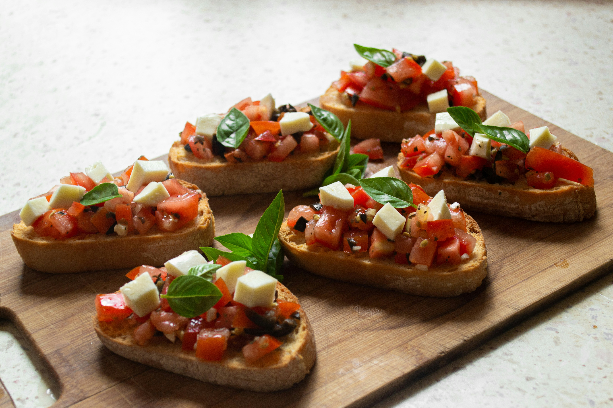

Home
Classic Bruschetta

Photo by
Konstantinas Ladauskas
on
Unsplash
Description
A fresh and flavorful Italian appetizer featuring slices of toasted bread
rubbed with garlic, topped with a vibrant mixture of diced fresh tomatoes,
basil, and a drizzle of olive oil. Perfect for two.
Ingredients
-
4-6 slices crusty Italian bread or baguette (about 1/2-inch thick)
- 1 tablespoon olive oil, plus more for drizzling
- 1 clove garlic, peeled
- 2 large ripe tomatoes, diced (about 1.5 cups)
- 1/4 cup fresh basil leaves, chopped
- 1/4 teaspoon salt, or to taste
- 1/8 teaspoon black pepper, or to taste
- 1 tablespoon balsamic glaze (for drizzling)
Steps
-
In a medium bowl, combine 2 large diced tomatoes, 1/4 cup chopped fresh
basil leaves, 1 tablespoon olive oil, 1/4 teaspoon salt, and 1/8
teaspoon black pepper. Stir gently to combine. Let this mixture sit for
at least 5 minutes to allow the flavors to blend.
-
Preheat your oven to 400°F (200°C), or heat a grill pan or large skillet
over medium heat. Arrange 4-6 slices of bread on a baking sheet (if
using oven) or directly on the hot pan. Toast for 3-5 minutes per side,
or until golden brown and crispy. Remove from heat. While still warm,
gently rub one side of each toasted bread slice with the peeled 1 clove
garlic. This adds a subtle garlic flavor.
-
Spoon a generous amount of the tomato and basil mixture onto the
garlic-rubbed side of each toasted bread slice. Drizzle with 1
tablespoon balsamic glaze over the assembled bruschetta. Serve
immediately as an appetizer.
Home